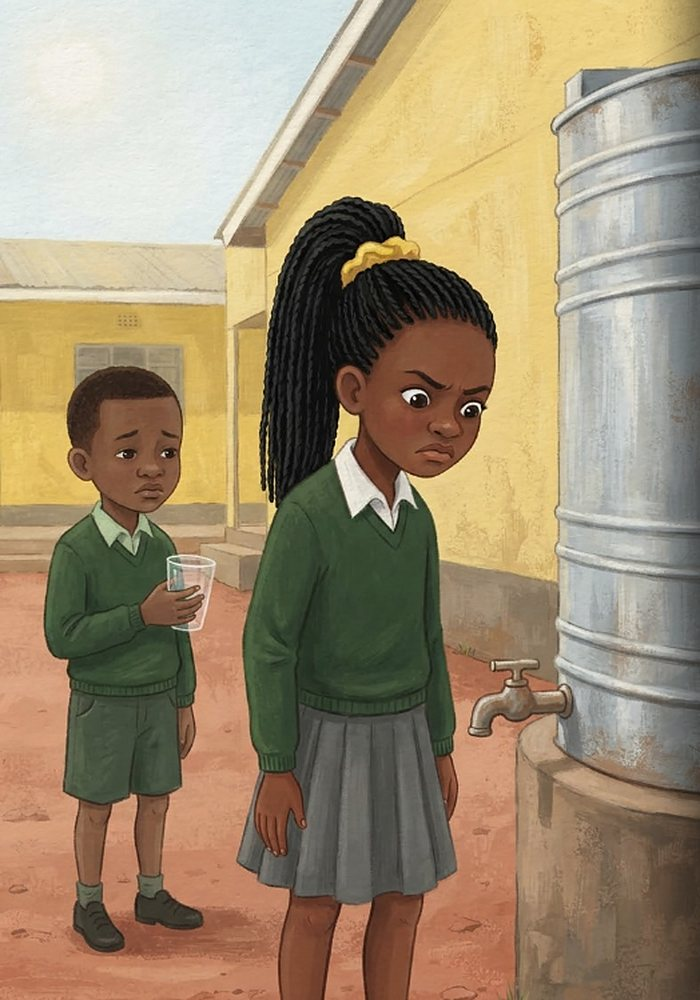
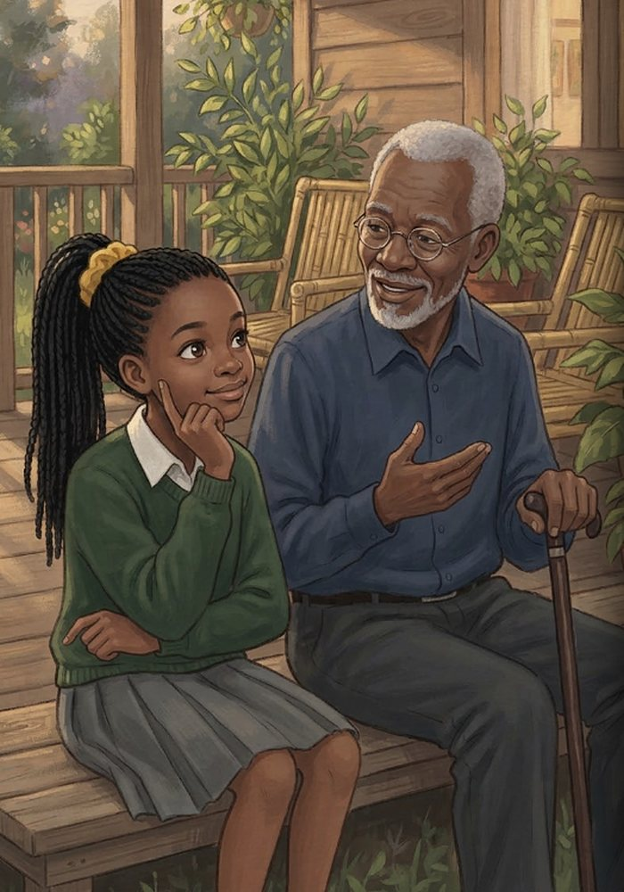
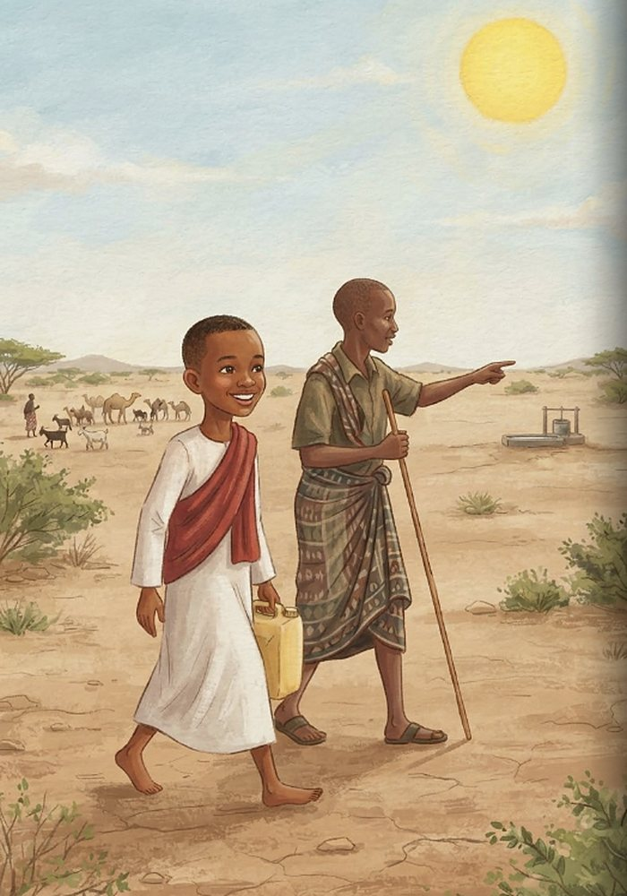
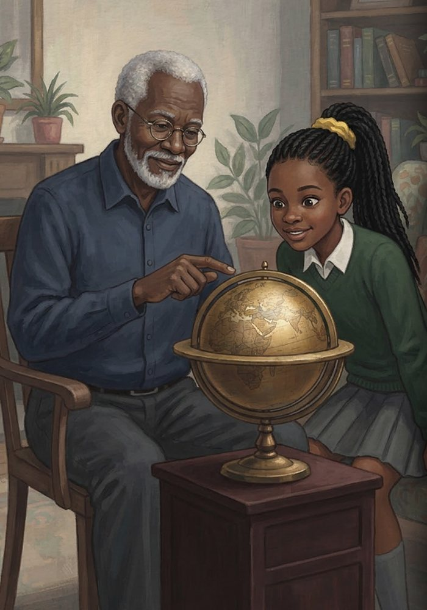
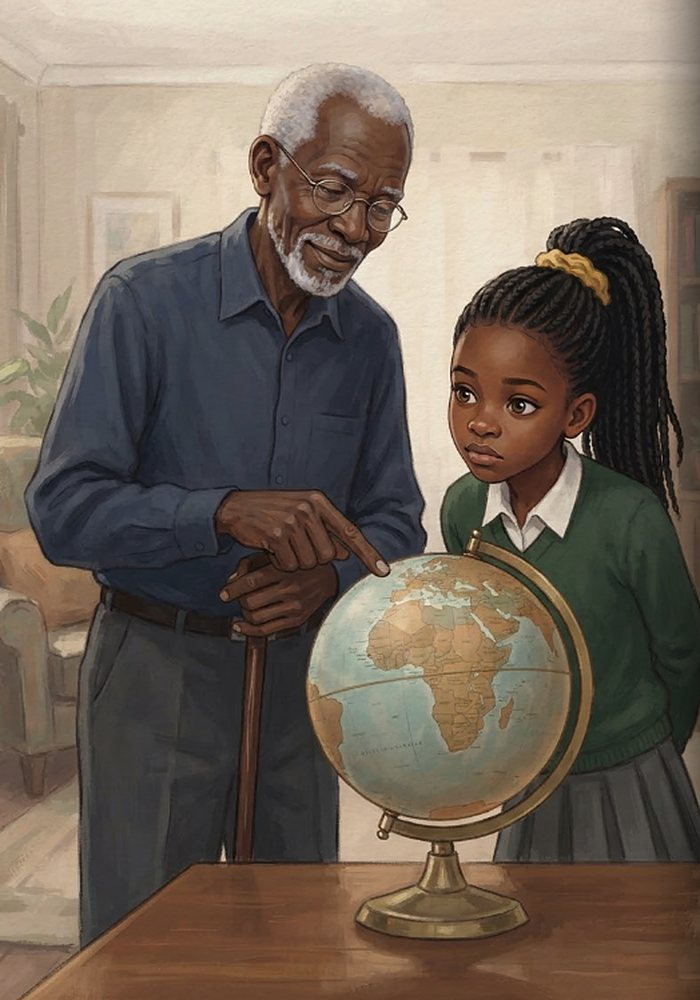
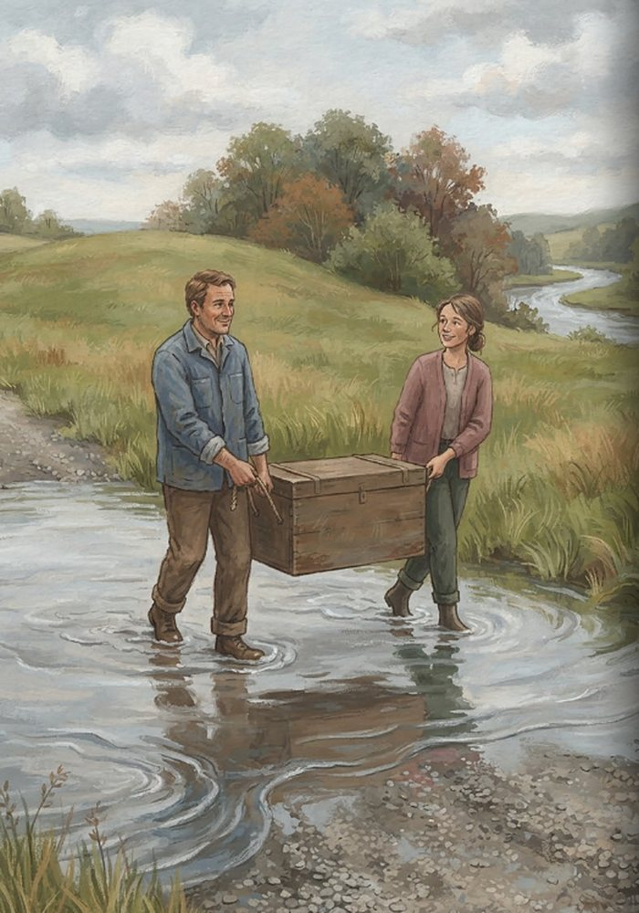
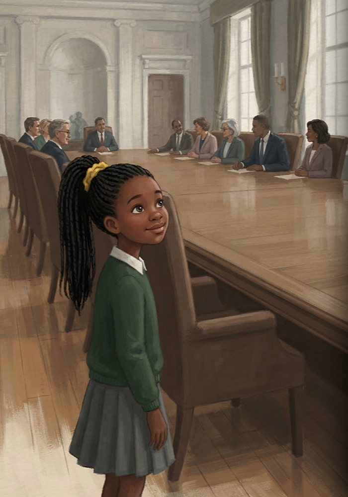
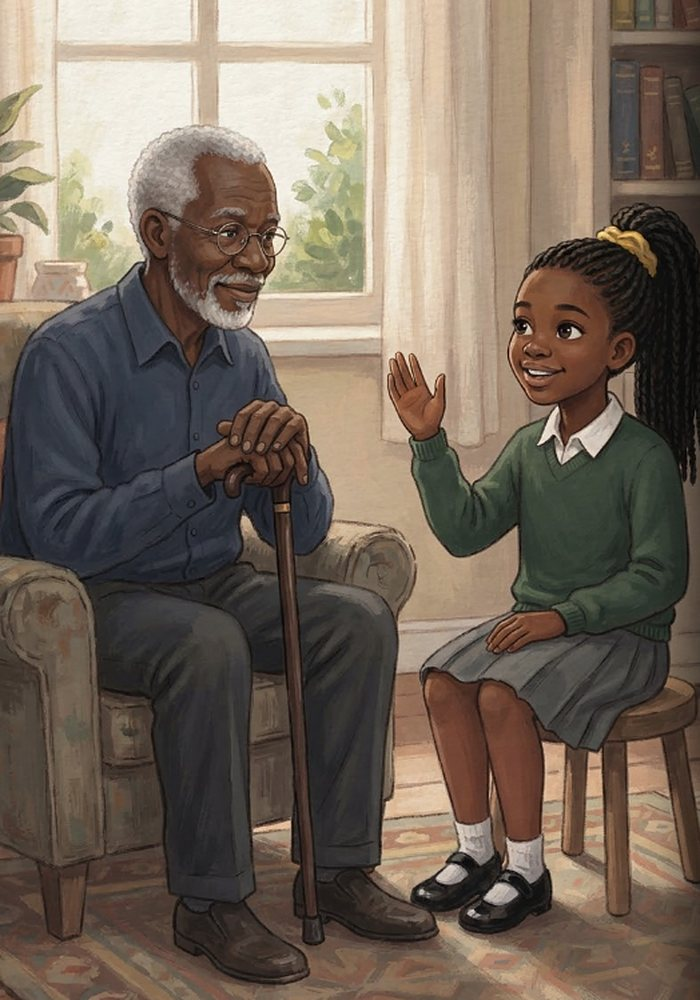
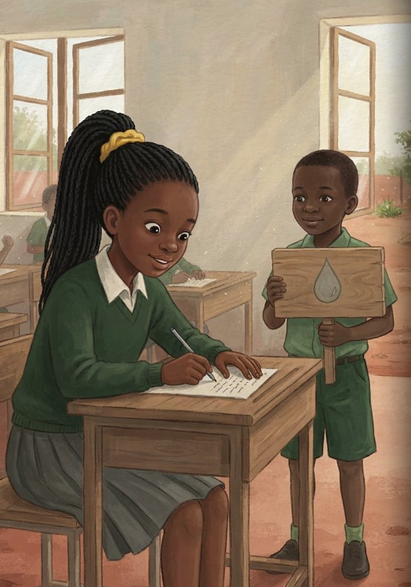
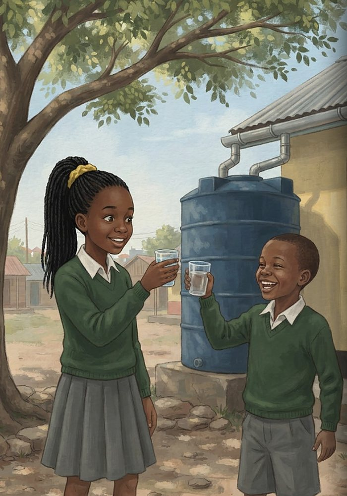

Is It Fair, Babu?
What you’ll learn
- What climate justice means
- Who caused climate change, and who is hurt most
- Why children deserve a say
- How to share fairly and save rainwater
When another class uses up all the water in the school tank, Wanjiru says it isn’t fair. Her grandfather Babu helps her see that the air around our Earth is shared in the same way, and why climate change hits hardest the people who caused it least.

At break time, Wanjiru’s class ran eagerly to the school water tank. But when they turned the tap, only a weak trickle came out—and then stopped completely! Another class had used almost all the water before them. Wanjiru’s friends sighed in disappointment, feeling hot and thirsty under the afternoon sun. Wanjiru looked at the empty metal tank and frowned. “That is just not fair!” she exclaimed.

That evening, Wanjiru sat on the veranda with her grandfather. Babu listened carefully as she told him about the water tank. He smiled gently and stroked his beard. “You have just understood something very big, Wanjiru,” Babu said softly. “The air around our Earth is shared by everyone, just like one big water tank shared by a whole school. When someone takes too much or pollutes it, everyone feels the impact.”

A letter arrived from her pen pal, Hassan, who lived far away in northern Kenya. Wanjiru opened the envelope and pictured his village in Marsabit. It had not rained there for a very long time. In her mind, she saw Hassan walking across the dry earth alongside his father, searching for fresh water for their family’s goats and camels under a blazing sun.

Back in the living room, Babu slowly spun an old globe. “For many, many years,” Babu explained, “big busy cities far across the ocean built factories, drove millions of cars, and ran huge power stations. They burned coal, oil, and gas, puffing grey clouds into the sky. Those countries that burned the most fuel caused most of climate change.”

Babu pointed to the continent on the globe. “Look here,” he said quietly. “Over Africa, there is only a tiny puff by comparison. Africa produces only about 4 out of every 100 parts of the world’s greenhouse gases.” Wanjiru stared at the map, thinking deeply. It felt so unfair that a region contributing so little to the pollution was impacted so heavily.

Yet in Hassan’s home in Marsabit, families faced severe droughts. In another town, heavy rain caused riverbanks to overflow. Wanjiru felt a surge of hope as she pictured neighbors working together during the flood, carrying belongings to higher ground and helping each other stay safe.

Wanjiru pictured a grand hall where adults made big decisions about the planet. But in her mind, the chairs around the table were far too tall for children, and no one was listening to young voices. Children did the least to cause climate change, but they will live with it the longest, and they are rarely asked what they think.

Babu nodded gently as Wanjiru shared her thoughts. “This is why we talk about haki,” Babu said. In Kiswahili, haki means fairness and justice. “Climate justice means that those who caused more pollution must do more to cut it and help others get ready. It means protecting those most at risk—and ensuring everyone, including children, gets a say.” In Wanjiru’s mind, a grown-up pulled up child-sized chairs to the table.

The next morning at school, Wanjiru knew just what to do. Her class created a fair schedule for the water tank so every grade got a turn, and together they set up gutters to collect rainwater. At assembly, Wanjiru spoke bravely about haki. Afterwards, she sat down to write back to Hassan to tell him everything she had learned.

During break time, the two school classes gathered by the rainwater collector. They shared cups of fresh water and laughed together under the shade of a wide tree. The water was shared fairly now.